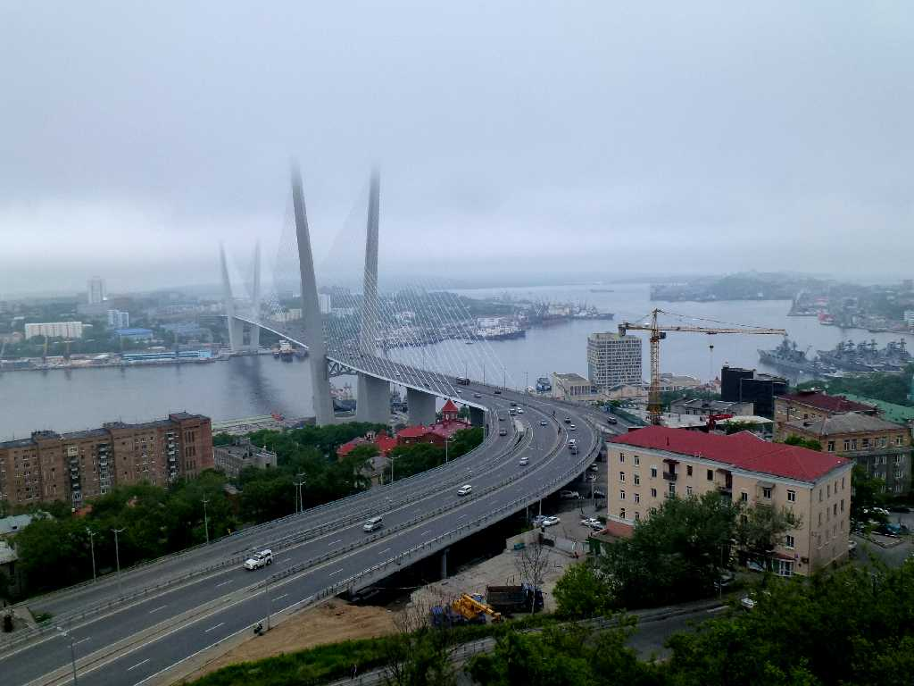
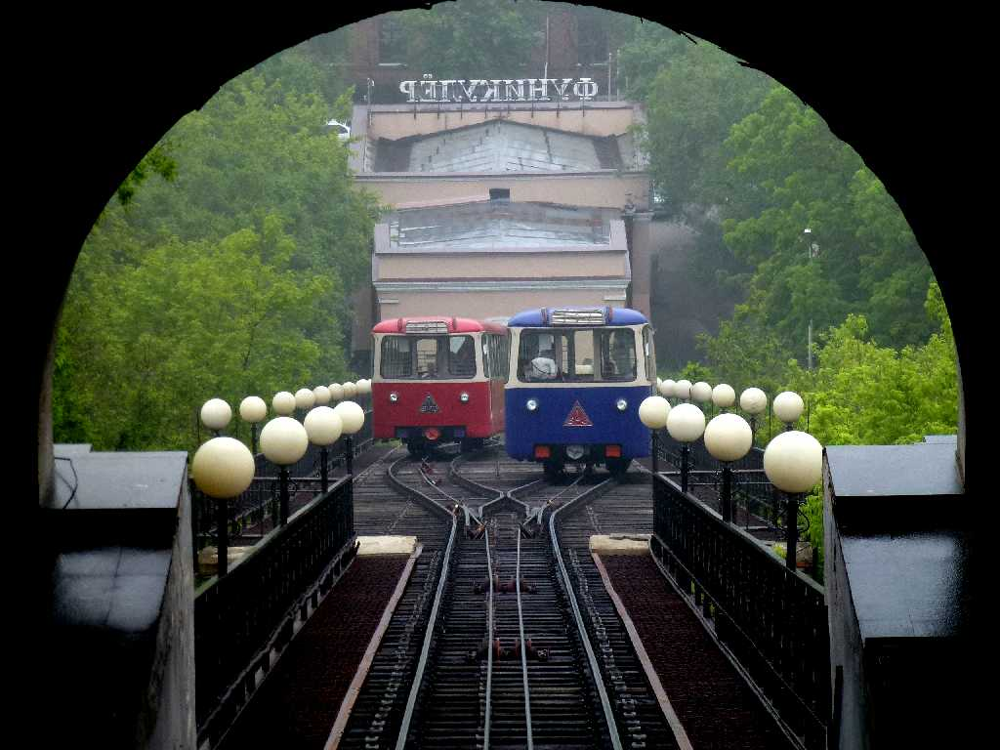
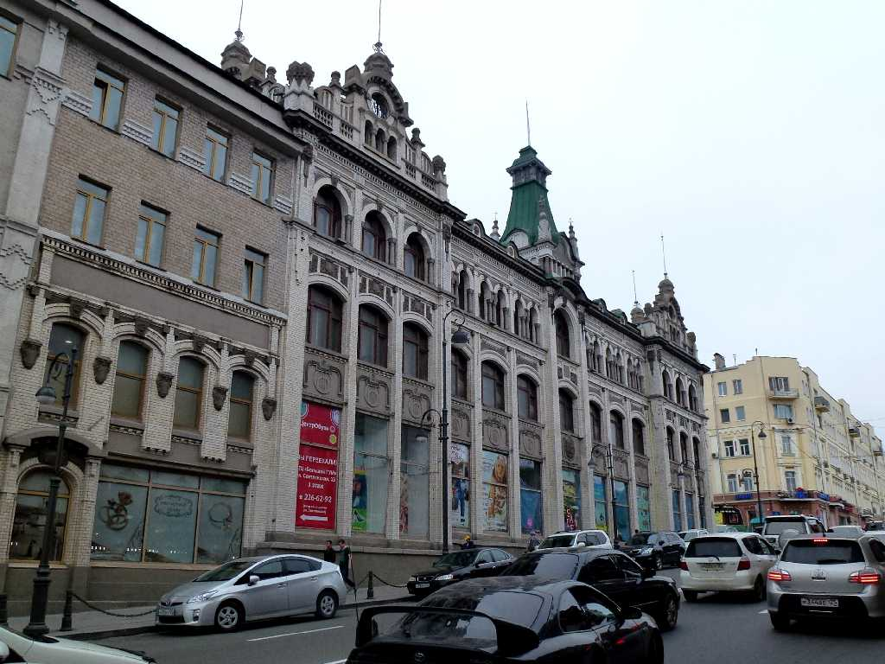
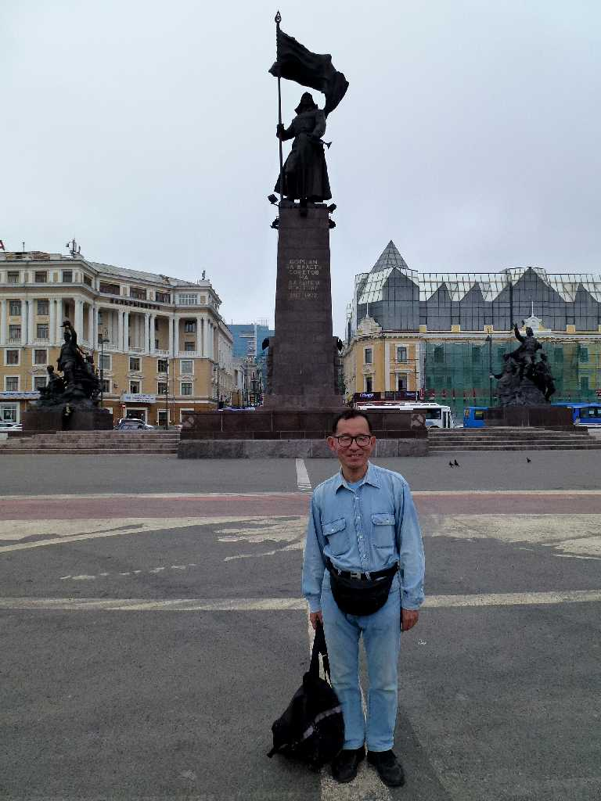

Zolotoy Most Bukhta Zolotoy Rog Eagles Nest Hill Vladivostok
８０日間世界一周鉄道の旅で昨夜成田空港を出発し未明にウラジオストック空港に到着した２日目はウラジオストク滞在で鷲ノ巣展望台より金角湾を望む

Cable car Vladivostok
１９６２年に運行が開始されたソヴィエト連邦で最初に創られたケーブルカー

Vladivostok
１８８４年に創られたアールヌーボー様式の建物が残るウラジオストクの街並み

June 25 2013 Central Square Vladivostok
ウラジオストク中央広場 Vladi(征服せよ)vostok(東を)